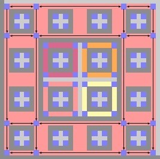

Work group on exact computations of topological entropy of multidimensional subshifts of finite type

Silvère Gangloff
2019-. Post-doctoral researcher at University of Wisconsin-Madison, Center for sleep and consciousness,
with Prof. G. Tononi.
2018-2019. Post-doctoral researcher at LIP, ENS Lyon,
working with
Nathalie Aubrun and
Michael Rao in the ANR project CoCoGro.
2015-2018. Ph.D. in Mathematics and Theoretical computer
science: Algorithmic complexity
of growth-type invariants of multidimensional SFT under
dynamical constraints, under supervision of
Mathieu Sablik.
2011-2015. ENS Paris: Studies in mathematics,
biology, and history ; Master of mathematics;
Agrégation de mathématiques.
More details:
Curiculum vitae.
Mail: first.last@gmx.com, flast@wisc.edu

Work group on exact computations of topological entropy of multidimensional subshifts of finite type
This work group aims at studying exact computations of entropies in statistical physics and provide rigorous tools in order to support
the predictions. Moreover, it aims at understanding the conditions of computability (in exact and algorithmic
sense) of entropy in multidimensions, without consideration for the physical meaning of the SFT. Thus, we
include in our consideration some examples coming from symbolic dynamics, as the Kari-Culik aperiodic shift.
It takes place in the LIP at the ENS Lyon, every other week approximately.
The next session will be the 21th of May, 11:00 AM.
Past sessions:
The problem of Kings [Silvère Gangloff] [Ref]
On a proof of square ice entropy computation [Silvère Gangloff] [Ref]
Topological entropy and periodic entropy [Nathalie Aubrun]: on Friedland's work [Ref] on algorithmic computability of entropy
for multidimensional SFTs with symmetry conditions.
Exposition of square ice entropy computation [Silvère Gangloff] [Ref]
Slides.
Entropy of coverable subshifts [Guilhem Gamard] [Ref]
Slides
Permutations of Z^2 with bounded movement [Benjamin Hellouin] [Ref]